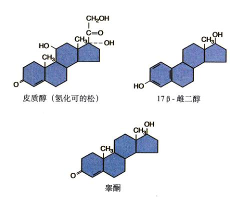
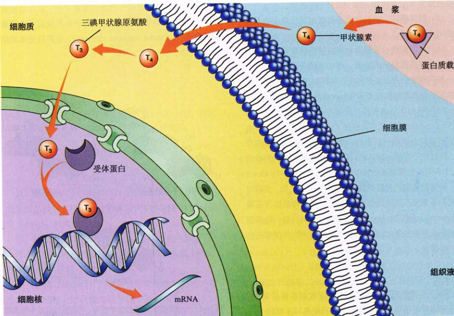
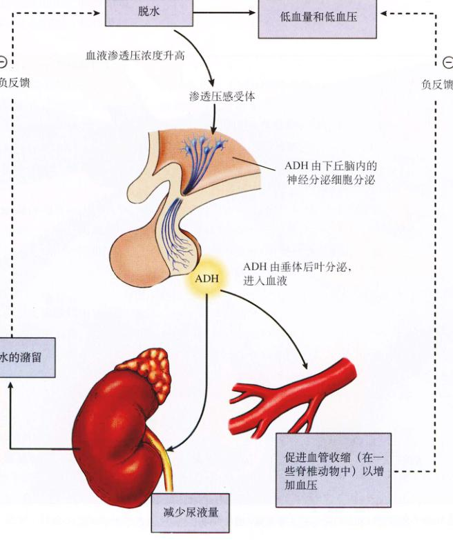
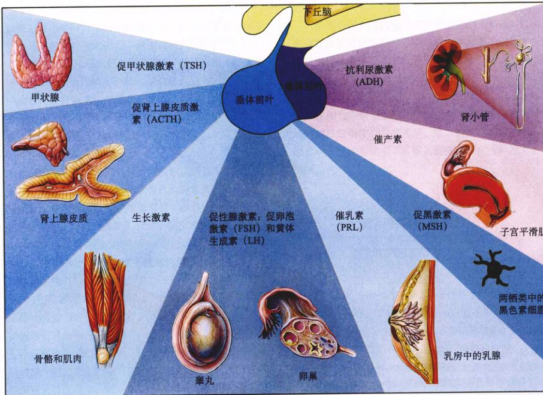
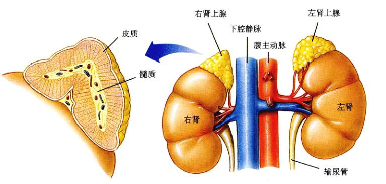
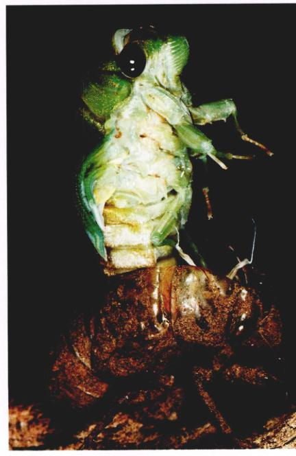

图 56.1 内分泌系统控制动物的生育 日本猕猴生活在一个亲密的大家庭中，成员们共同生育并养育后代。但并不是每个个体都同时生育，因为个体间的激素水平是不一样的。
脊椎动物的组织和器官协同同工作，使身体的内环境维持稳态（homeostasis），并控制机体的其他功能，如生殖等。稳态是通过体内所有器官在许多机制的作用下而达到的。神经系统和内分泌系统（图 56.1）是专门调节体内器官的系统。二者都释放调节分子，与器官细胞表面的受体蛋白质结合，从而发挥作用。本章我们将讨论这些调节分子及产生这些调节分子的细胞和分泌腺，以及它们是如何调节机体活性的。
我们在第54章中讨论过，神经元轴突会向突触间隙中分泌一种叫“神经递质”的化学信使。这些化学物质只扩散一小段距离就到达突触后膜，与其蛋白质受体结合并激活突触细胞（另一个神经元或肌纤维或腺细胞）。突触传递通常只影响接受神经递质的一个突触后细胞。
激素（hormone）是一种由内分泌腺（endocrine gland）或行使内分泌功能的器官分泌到血液中的化学调节分子。血液将其运到身体的每一个细胞，但只有某些激素的特定靶细胞（target cell）才能发生反应。因此，神经递质和激素的区别不在于它们的化学本质，而在在于它们达到靶细胞的方式和距离。例如，一种叫去甲肾上腺素的化学调节物，既可作为神经递质由交感神经细胞末梢分泌，也可作为激素由肾上腺分泌。
一些特殊的神经细胞只分泌化学信使到血液中，而不分泌到突触间隙中。在这种情况下，这些化学物质有时被称为神经激素（neurohormone）。此时神经系统与分泌系统的界限很模糊不清。当然，由于大脑中的一些神经元可以分泌激素，所以大脑也可称为内分泌腺。
除了以神经递质和激素形式分泌的化学信使外，还有其他的调节分子在器官内发挥作用。器官内的各细胞以这种方式相互调节，这种调节方式不属于内分泌调节，因为调节分子不经过血液的运输即可起作用，但与激素作用于靶细胞的方式类似。这种调节方式被称作旁分泌（paracrine）。另一种释放到环境中的化学信使被称为外激素（pheromone），这些分子只在动物之间的交流中起作用，不用千动物体内的调节。各种不同类型的化学信使的比较见图 56.2。
内分泌系统（图 56.3）包括了所有行使内分泌功能的器官，比如甲状腺、松果腺、肾上腺等（表 56.1），也包括分泌其他功能的激素的器官。与外分泌腺利用导管分泌不同的，内分泌腺没有管状结构，所以只能将激素分泌到周围的血管当中。
内分泌腺分泌的激素属于4个不同类别：
图 56.2 器官的功能受神经、旁分泌和内分泌调节因子的影响 每种化学调节物都通过特定途径与靶器官细胞表面的蛋白受体或胞内受体结合。
| 内分泌腺和激素 | 靶细胞组织 | 主 要 功 能 | 化 学 本 质 |
|---|---|---|---|
| 垂体后叶 | |||
| 抗利尿激素 (ADH) | 肾脏 | 促进水的重吸收，保水 | 9 肽 |
| 催产素 | 子宫 乳腺 |
促进子宫肌收缩 促进乳汁分泌 |
9 肽 |
| 垂体前叶 | |||
| 生长激素 (GH) | 许多器官 | 刺激蛋白质合成和脂肪分解，从而促进生长 | 蛋白质 |
| 促肾上腺皮质激素 (ACTH) | 肾上腺皮质 | 刺激肾上腺皮质激素的分泌，如皮质醇 | 39 肽 |
| 促甲状腺激素 (TSH) | 甲状腺 | 刺激甲状腺激素分泌 | 糖蛋白 |
| 黄体生成素 (LH) | 性腺 | 刺激排卵和黄体形成（雌性），促进睾酮分泌（雄性） | 糖蛋白 |
| 促卵泡激素 (FSH) | 性腺 | 刺激精子形成（雄性） 刺激卵泡发育（雌性） |
糖蛋白 |
| 催乳素 (PRL) | 乳腺 | 刺激乳汁分泌 | 蛋白质 |
| 促黑激素 (MSH) | 皮肤 | 刺激爬行、两栖动物皮肤变色，哺乳动物中功能未知 | 肽类（两种；13 肽和 22 肽） |
| 甲状腺 | |||
| 甲状腺素 | 大多数细胞 | 刺激代谢速率，生长发育必需因子 | 碘化氨基酸 |
| 降钙素 | 骨骼 | 抑制骨中钙的流失，从而降低血钙浓度 | 32 肽 |
| 甲状旁腺 | |||
| 甲状旁腺激素 | 骨、肾、消化道 | 刺激骨分解，提高血钙浓度，增强肾对 Ca2+ 的重吸收，激活维生素 D | 34 肽 |
| 肾上腺髓质 | |||
| 肾上腺素和去甲肾上腺素 | 平滑肌、血管、心肌 | 启动应激反应，提高心率、血压、代谢率；舒张血管；分解脂肪；提高血糖浓度 | 氨基酸衍生物 |
| 肾上腺皮质 | |||
| 醛固酮 | 肾小管 | 维持 Na+、K+ 平衡 | 类固醇 |
| 皮质醇 | 许多器官 | 提高血糖；分解脂肪；适应长期的应激反应 | 类固醇 |
| 胰 | |||
| 胰岛素 | 肝、骨骼肌、脂肪组织 | 降低血糖浓度、促进肝糖原积累 | 51 肽 |
| 胰高血糖素 | 肝、脂肪组织 | 提高血糖、促进肝糖原分解 | 29 肽 |
| 卵巢 | |||
| 雌二醇 | 普遍存在 | 刺激雌性第二性征的发育 | 类固醇 |
| 孕酮 | 雌性生殖系统 子宫 乳腺 |
刺激青春期性器官发育和为子宫受孕做准备 完成受孕准备 刺激乳腺发育 |
类固醇 |
| 睾丸 | |||
| 睾酮 | 许多器官 雄性生殖器官 |
刺激雄性第二性征发育，青春期发育生长，刺激性器官发育，促进精子形成 | 类固醇 |
| 松果腺 | |||
| 褪黑素 | 性腺、色素细胞 | 功能尚不清楚，在一些脊椎动物中影响色素形成；控制某些动物生命周期，影响人的青春期的开始 | 氨基酸衍生物 |
* 这些激素是由内分泌腺分泌的。如前面讨论的，许多激素是由身体的其他器官分泌的。
图 56.3 人的内分泌系统 本图仅显示主要的内分泌腺，但是还有许多器官除了其第一功能外也附带分泌一些激素。
(1) 多肽类 (polypeptide)：这类激素由不多于 100 个氨基酸的肽链组成。一些重要激素如胰岛素和抗利尿激素 (ADH) 就属此类。
(2) 糖蛋白类 (glycoprotein)：这类激素由长于 100 个氨基酸的多肽链与糖基构成，例如促卵泡激素 (FSH) 和黄体生成素 (LH)。
(3) 胺类 (amine)：色氨酸和酪氨酸的衍生物，包括由肾上腺髓质、甲状腺和松果体分泌的激素。
(4) 类固醇类 (steroid)：胆固醇的衍生物，包括睾酮、雌二醇、孕酮和氢化可的松。
类固醇类激素又分为两类：性类固醇 (sex steroid) 和皮质类固醇 (corticosteroid)。前者由睾丸、卵巢、胎盘和肾上腺皮质分泌，后者只由肾上腺皮质分泌。皮质类固醇包括皮质醇（可调节血糖平衡）和醛固酮（可调节盐平衡）。
胺类激素由肾上腺髓质（肾上腺的内部）分泌，即儿茶酚胺 (catecholamine)，包括肾上腺素（又叫副肾素）和去甲肾上腺素（非副肾素），这些都是酪氨酸的衍生物。另一种酪氨酸的衍生物叫甲状腺素，是由甲状腺分泌的激素。松果腺分泌另一种不同的胺类激素，叫褪黑素 (melatonin)，是色氨酸的衍生物。
所有激素皆可分为脂溶性和水溶性两种，脂溶性激素 (lipophilic hormone) 包括类固醇激素和甲状腺素，其余的均为水溶性激素。这些差异对理解激素如何调节其靶细胞的机制十分重要。
旁分泌调节在许多器官和免疫细胞中都存在。如果调节不同的免疫细胞，那么这种分子就被称为细胞因子 (cytokine)。其他的旁分泌调节分子被称为生长因子 (growth factor)，因为它们促进细胞生长和分化。比如血小板生长因子 (platelet-derived growth factor)、表皮生长因子 (epidermal growth factor)、胰岛素样生长因子 (insulin-like growth factor) 就刺激细胞分化和靶细胞增殖。神经生长因子 (nerve growth factor) 就是一种属于神经系的旁分泌调节分子，叫神经营养蛋白 (neurotrophin)。
一氧化氮可用作神经递质（见第54章），也是由血管内皮细胞分泌的。在这种情况下，它可以扩散到血管壁的平滑肌中，促进血管舒张，是一种分泌调节因子。血管内皮也分泌其他的旁分泌因子，包括：内皮缩血管肽 (endothelin)，可刺激血管收缩；缓激肽 (bradykinin)，可促进血管舒张。这些旁分泌调节作用是对血管自律神经调节的一个补充。
其中最多样化的一类旁分泌调节因子称为前列腺素 (prostaglandin)。前列腺素是一族 20 个碳脂肪酸，分子中有一个 5 碳环。这种分子是花生四烯酸 (arachidonic acid) 前体的衍生物，是当机体受到激素或其他物质刺激时，由细胞膜上的磷脂分子释放的。前列腺素在几乎每个器官中都可以合成，并有许多功能，包括：
(1) 免疫系统：前列腺素促使疼痛、发烧等感染症状的发生。能抑制前列腺素合成的药物可缓解这些症状。
(2) 生殖系统：前列腺素可能在卵细胞中引发排作用。分泌过多的前列腺素可导致早产、子宫内膜异位症或痛经。
(3) 消化系统：由胃、肠分泌的前列腺素可抑制胃液的分泌，影响肠蠕动和对液体的吸收。
(4) 呼吸系统：对肺血管和支气管平滑肌而言，一些前列腺素可引起收缩，另一些可引起扩张。
(5) 循环系统：前列腺素是凝血过程中血小板发挥功能的必需因子。
(6) 泌尿系统：肾髓质分泌的前列腺素可引起血管扩张，从而提高肾的血流量，增加尿的分泌。
前列腺素的合成可被阿司匹林抑制。阿司匹林是一种最常用的非类固醇类抗炎药物 (nonsteroidal anti-inflammatory drug, NSAID)，也包括麦撤西丁 (indomethacin) 和布洛芬 (ibuprofen)。这些药物抑制了环氧化酶 2 (Cox-2)（由花生四烯酸合成前列腺素的必需酶）的活性从而发挥作用。通过这一反应，NSAIDs 抑制了感染和疼痛。不幸的是，NSAIDs 也抑制其他相似的酶的活性，如 Cox-1。Cox-1 是一种帮助稳定消化道的酶，于是产生了胃出血、血凝时间延长等意想不到的副作用。一种新的疼痛缓解药西乐葆 (Celebrex)，只抑制 Cox-2，而不抑制 Cox-1，是一种新型的治疗关节炎的药，也是那些必须经常使用疼痛缓解药病人的必需品。
如我们之前所述的，激素可分为脂溶性和水溶性两种。脂溶性激素，包括所有的类固醇类激素（图 56.4）、甲状腺素，其他亲脂性调节分子如视紫红质或维生素 A，都可以轻松地进入细胞。这是因为细胞膜的脂类部分不会成为这类激素进入细胞的障碍。因此，所有脂溶性调节分子有着相似的作用机制。相反，水溶性激素不能通过细胞膜。它们必须通过不同的机制调节靶细胞。
类固醇激素由于本身是脂类，所以是脂溶性的，甲状腺素则因为它是非极性氨基酸的衍生物。由于它们的非水溶性，所以它们不能在体液中扩散，而是被血液中的蛋白质载体运输。当它们到达靶细胞时，便与载体脱离，通过靶细胞膜进入细胞（图 56.5）。一些类固醇激素然后结合到细胞质的蛋白质受体上形成复合物，进入核中。其他的类固醇类激素则在结合受体以前直接进入核中。不论其在核中结合受体还是受体-激素复合物的形成式被运到核中，其余的过程几乎一样。
因结合脂溶性激素而激活的激素受体，现在能够结合到 DNA 上的特定位点。这类 DNA 区域被称作激素反应单元 (hormone response element)。激素与受体的结合可直接影响被激活的那个位点基因转录的水平，从而产生特定的 mRNA，翻译成特定的蛋白质。
图 56.4 一些类固醇激素的化学结构 类固醇是血液中胆固醇的衍生物，这些激素，如氢化可的松、雌二醇和睾酮，有许多不同的生理功能，但在结构上只有很小的差别。类固醇激素由肾上腺皮质、睾丸、卵巢和胎盘分泌。
图 56.5 类固醇类激素的作用机制 类固醇类激素是脂溶性的，因此很容易便能通过细胞膜。它们结合到细胞质或细胞核中的受体上（未标出）。如果受体在胞质中，那么激素受体复合物便进入细胞核，再连到 DNA 的特定区域中，促进 mRNA 的合成。
图 56.6 甲状腺素的作用机制 甲状腺素有 4 个碘原子。当它进入靶细胞时，T4 转化为 T3（含 3 个碘原子）。T3 进入细胞核中与核受体结合。此激素受体复合物再连在 DNA 的特定区域上，促进基因的转录。
这些蛋白质一般都具有酶的活性，可在一定程度上改变靶细胞的代谢水平。
甲状腺素的作用机制与类固醇激素相似。它含 4 个碘原子，所以经常简写为 T4，叫四碘甲状腺原氨酸 (tetraiodothyronine)。甲状腺同时还分泌少量的 T3，叫三碘甲状腺原氨酸 (triiodothyronine)（含 3 个碘原子）。二者都可进入靶细胞，但所有 T4 都会转变为 T3（图 56.6）。因为只有 T3 才能进入核中并与核受体蛋白质结合。这种激素受体复合物再结合到 DNA 的特定激素应答单元上。
那些体积太大，或是极性太大以至于不能穿过细胞膜的激素，包括所有肽类和糖蛋白类激素，以及肾上腺素和去甲肾上腺素这类儿茶酚胺类激素。这类激素与位于靶细胞膜外侧的蛋白质受体结合，激素不进入细胞。如果你把它看作从内分泌腺到靶细胞的信号传递者，那么在靶细胞内就需要第二信使来发挥激素的作用。细胞中许多小分子都可作为第二信使（见第7章）。激素间以及受体间的相互激活作用可提高靶细胞胞质中第二信使的浓度。
水溶性激素与其受体的结合一般是可逆的，并且十分重要。它结合到受体上并激活第二信使系统后，便与受体分离，通过血液运到身体的其他靶细胞处。最后，酶（主要在肝中）将其降解为非活性衍生物。
肾上腺素的作用机制就是第二信使系统的一个例子。肾上腺素受体 (adrenergic receptor) 有 α、β 两种类型，结合激素后会激活不同类型的第二信使系统。
早在1960年，萨瑟兰伯爵就指出肾上腺素与肝细胞膜上的 β 受体结合后生成的第二信使是 cAMP (cyclic AMP, 环-磷腺苷)（图 56.7），这是最早发现的第二信使系统。
β 肾上腺素受体与膜上的 G 蛋白相关（见第7、54章）。每个 G 蛋白有 3 个亚基，肾上腺素与其受体结合后会使 G 蛋白的 1 个亚基与其他两个脱离。脱离的亚基在质膜内扩散，直至遇到腺苷酸环化酶 (adenylyl cyclase)。这种细胞膜上的酶是没有活性的，与 G 蛋白的亚基结合后被激活，然后，这种酶催化 ATP 形成 cAMP。在膜内侧形成的 cAMP 在细胞质中扩散，结合并激活蛋白激酶 A (protein kinase-A)，这是一种可在特定胞内蛋白质上加磷酸基的酶。
被蛋白激酶 A 磷酸化的蛋白质本身在不同细胞中有不同的类型，这就是肾上腺素在不同组织中有不同功能的原因。在肝细胞中，蛋白激酶 A 磷酸化并激活另一种酶——磷酸化酶 (phosphorylase)，从而可将糖原转化为葡萄糖。在动物逃跑或争斗中，当肾上腺髓质被神经冲动多步反应后，将肝中的糖原分解为葡萄糖，分泌到血液中去。在心肌细胞中，蛋白激酶 A 磷酸化另一系列蛋白，从而使心脏跳动得更快、更有力。
图 56.7 肾上腺素对肝细胞的作用 ① 肾上腺素与肝细胞表面特定的蛋白质受体结合。② 通过 G 蛋白作为媒介，激素受体复合物激活了腺苷酸环化酶，将 ATP 变为 cAMP。③ cAMP 作为第二信使，将处于非活性状态下的蛋白激酶 A 激活。④ 蛋白激酶 A 使酶磷酸化，将其激活，后者催化糖原转化为葡萄糖。
当肾上腺素结合 α 受体后，不活化腺苷酸环化酶产生 cAMP，相反地，通过另一种 G 蛋白，活化了另一种膜连接酶——磷脂酶 C (phospholipase C)（图 56.8）。这种酶将膜上特定的磷脂脱下来形成第二信使——三磷酸肌醇 (IP3)。IP3 从膜上扩散到胞质中并与内质网上的受体结合。
回忆一下第5章，我们知道内质网是一种在不同细胞中有诸多功能管状膜结构。它的一个功能是通过主动运输将 Ca2+ 从细胞质运内内质网中，聚集 Ca2+。另一个功能就是将 Ca2+ 从细胞质膜转运到细胞外液中。这两神机制使得细胞质中的 Ca2+ 浓度维持在较低的水平。结果，在内质网内部和细胞质之间，以及细胞质与细胞外液之间建立了起很大的 Ca2+ 浓度梯度。
当 IP3 与内质网上的受体结合后，促使内质网释放所存储的 Ca2+，细胞膜上的 Ca2+ 通道也打开，使细胞外液中的 Ca2+ 大量内流。
图 56.8 IP3 / Ca2+ 第二信使系统 ① 肾上腺素与细胞表面特定的蛋白质受体结合。② 通过 G 蛋白的作用，激素受体复合物活化了磷脂酶 C，将膜磷脂变成 IP3。③ IP3 在胞质中扩散并被内质网上的受体识别。④ IP3-受体复合物使内质网向细胞质中释放 Ca2+。⑤ 一些释放出来的 Ca2+ 与一种调节蛋白——钙调素结合。⑥ Ca2+-钙调素复合物活化其他细胞内蛋白，最终实现激素的作用。
突然涌入的 Ca2+ 与细胞质中的钙调蛋白 (calmodulin) 结合，形成与 cAMP 有相似功能的调节因子。钙调蛋白的一个功能便是激活另一种蛋白激酶，从而使另一类胞内蛋白磷酸化。
多种第二信使系统的优势何在？以胰岛素和肾上腺素在肝细胞中的拮抗作用为例。肾上腺素通过 cAMP 作为第二信使将肝糖原分解成葡萄糖，胰岛素则促进肝糖原的合成。很明显，胰岛素不能将 cAMP 作为第二信使。虽然胰岛素作用的确切机制尚未完全了解，但其可能是部分通过 IP3/Ca2+ 第二信使系统。
不是所有的大的极性激素分子都是通过提高靶细胞胞质中第二信使的浓度发挥作用的，有些是通过改变特定的通道蛋白的形状而起作用的（见第6章和第54章）。如果这些通道在正常情况下是闭合的，形状改变将使其打开，促使特定的离子顺浓度梯度进入或离开细胞；如果通道平时是开放的，化学信使可使其关闭。比如：一些激素可将平滑肌上的 Ca2+ 通道打开，另一些激素则将其关闭。这将提高或降低肌肉的收缩性。
改变离子通道形状的分子机制与活化第二信使的机制类似。激素首先与靶细胞膜外侧的蛋白质受体结合。这个受体然后会用 G 蛋白作为信号去改变离子通道的形状。
虽然 G 蛋白在激素发挥功能中起很大作用，但在不是在所有激素对靶细胞的识别过程中是必需的。此时在没有 G 蛋白的参与下，蛋白质受体直接与酶或离子通道相连。
脑垂体 (pituitary gland) 通过一个茎状物与下丘脑相连（图 56.9），位于视交叉神经后面（第54章）。显微观察表明，垂体分为两部分，前部分是腺质的，叫腺垂体或垂体前叶 (anterior pituitary)；后部分纤维化，叫垂体后叶 (posterior pituitary)。脑垂体的这两部分有不同的胚层起源，分泌不同的激素，并被不同的神经系统调节。
图 56.9 垂体后叶通过一短茎连在下丘脑上 这里显示的垂体后叶（短茎连接的卵形结构）已被放大了 15 倍，它调节着身体其他许多内分泌腺的分泌。
图 56.10 抗利尿激素 (ADH) 的作用 血液渗透压的升高促使垂体后叶分泌 ADH，可提高肾对水的重吸收。它通过负反馈作用调节体内环境的相对稳定。
垂体后叶呈纤维化是因为它包含许多起源于下丘脑神经元的轴突，它们穿过连接茎形成一束纤维。这种解剖结构的关系是由胚胎发育过程中垂体后叶的形成方式决定的。随着第三脑室的底部形成下丘脑，部分神经组织向下生长形成了垂体后叶。下丘脑和垂体后叶之间便由一束轴突连接着。
垂体后叶的激素分泌功能是在1912年首次发现的，起因是一个不同寻常的医学病例报道。一名脑部被枪击中的男子，在一天24 h内，每 30 min 就要小便一次。因为子弹头留在他的脑垂体中。后续研究证明，切除脑垂体也可产生相同的症状。在后续提取物中，人们发现了一种可使得肾保存水分的物质。20世纪50年代早期，科学家从垂体后叶中分离出一种多肽，叫抗利尿激素 (antidiuretic hormone, ADH)，又叫血管加压素 (vasopressin)，它可促进肾对水的保留（图 56.10）。当 ADH 消失后，肾脏无法保存水分，于是会产生大量尿液。这就是过度摄入抑制 ADH 分泌的乙醇会导致不断小便的原因。
垂体后叶还分泌催产素 (oxytocin)，这第2个肽类激素与 ADH 类似，也是由 9 个氨基酸组成的多肽激素。催产素可促进乳汁分泌反射，因此乳腺周围平滑肌收缩，将乳汁挤到管中再从乳头出来。吸吮时，乳头上的感受器可将动作电位传到下丘脑，导致催产素的分泌。催产素也可在分娩时促使子宫的收缩。产后用乳汁喂养婴儿的母亲体内继续分泌催产素，这就是和不用乳汁喂养婴儿的母亲相比，其子宫可更快地恢复到产前状态的原因。
ADH 和催产素是由位于下丘脑的神经元分泌的。这两个种激素由轴突运输并存储在垂体后叶中。受到相应的刺激——血浆渗透压升高，婴儿吮吸乳头——两种激素便被相应地分泌到血液中去。这种反馈控制由于牵涉到神经系统和内分泌系统，所以 ADH 和催产素的分泌被称为神经内分泌反射 (neuroendocrine reflex)。
图 56.11 垂体前叶和后叶分泌的主要激素 图中只列出了这些激素的部分功能。
不同于后叶，垂体前叶不是由大脑向下延伸形成的，而是由胚胎口腔顶部的上皮组织伸出的囊状突起形成的。由于它是上皮组织，所以是真正的腺体，产生的激素是由其自身分泌而来的，大部分激素都能刺激靶器官和其他内分泌腺的生长。因此，前叶分泌的激素被称做为营养激素或促激素。当靶器官是另一个内分泌腺时，这个腺体便在营养激素的刺激下分泌其自身的激素。
前叶中不同类型的细胞分泌的激素（图 56.11）包括以下几种：
(1) 生长激素 (growth hormone, GH)：刺激肌肉、骨骼（间接）和其他组织生长，对新陈代谢也有基础调节作用。
(2) 促肾上腺皮质激素 (adrenocorticotropic hormone, ACTH)：促进肾上腺皮质分泌肾上腺皮质激素，包括人类的氢化可的松和其它脊椎动物的皮质酮，可调节血糖平衡。
(3) 促甲状腺激素 (thyroid-stimulating hormone, TSH)：刺激甲状腺分泌甲状腺素，从而刺激有氧呼吸和代谢。
(4) 黄体生成素 (luteinizing hormone, LH)：促进卵细胞生成和女性月经周期中黄体的形成（见第59章）。也刺激睾丸分泌睾酮，从而促进精子的形成和雄性第二性征的产生。
(5) 促卵泡激素 (follicle-stimulating hormone, FSH)：刺激雌性卵泡的形成，促进雄性精子形成。FSH 和 LH 共同叫做促性腺激素。
(6) 催乳素 (prolactin, PRL)：刺激哺乳动物乳腺分泌乳汁，也调节脊椎动物的肾脏功能，一些鸟类素囊液（通过逆流喂养雏鸟）的分泌，以及从海水流入淡水时某些鱼类鳃对钠的滞留。
(7) 促黑激素 (melanocyte-stimulating hormone, MSH)：刺激某些鱼、两栖、爬行类中上皮组织中黑色素的形成和分布。在哺乳动物中的具体功能未知，但异常高浓度的 ACTH 可引起皮肤变黑，可能是由于 ACTH 中含有和 MSH 类似的氨基酸序列。
垂体前叶的重要功能于1909年首次发现。当时，一位38岁的 South Dakota 农民患有肢端肥大症 (acromegaly)，经外科手术切除了垂体肿瘤后痊愈。肢端肥大症是一种巨大畸形症状，下巴突出，面部硕大肥厚，并且此症状常与垂体瘤并发。罗伯特·沃罗 (Robert Wadlow)
图 56.12 巨人症 Robert Wadlow 的照片，21 岁生日时他与父母及4个兄妹合影。出生时体形正常，但由于儿童时患有脑垂体瘤，因此在他 22 年的生命历程中从未停止过生长。
1928年出生于伊利诺斯州的 Alton，22岁死于传染病。生前他的身高足有 2.47 m (8.11 英尺)，体重达 220 kg (485 磅)（图 56.12）。他是有史以来记载的最高的人，并且在他死的那年还在不断长高。
现在，我们知道巨人症 (gigantism) 是由于儿童生长激素 GH 的过量分泌造成的。GH 刺激肌肉和相关组织生长、蛋白质的合成，还通过刺激软骨组织中细胞分裂促进骨骼伸长。研究表明，在无血浆条件下，这种刺激不会产生，说明骨细胞中没有 GH 的受体，并且 GH 产生的刺激是间接的。现在，我们还知道 GH 刺激肝中胰岛素样生长因子 (insulin-like growth factor) 的生成以及向血液中的分泌，这种生长因子刺激骨骺板的生长和骨的延长。
当一个人的骨骼由软骨发展到硬骨后，GH 就不能刺激骨的延长。然而，成年人 GH 的过量分泌可导致骨和软组织的畸形，形成肢端肥大症。生长期 GH 的缺乏导致垂体性侏儒症 (pituitary dwarfism)，成年后不能达到正常身高。
在作用于非内分泌腺器官方面，催乳素和生长激素十分类似。除了它对乳腺细胞和鸟类嗉囊的作用外，它还通过肾脏、鱼鳃和海鸟的盐腺来控制电解质平衡（将
图 56.13 下丘脑对垂体前叶的激素调节 下丘脑中的神经元分泌的激素通过门脉血管的运输直接到达垂体前叶，从而促进或抑制前叶激素的分泌。
图 56.14 负反馈抑制 一些内分泌腺分泌的激素反馈抑制下丘脑激素的分泌以及垂体前叶激素的分泌。
在第58章讨论）。与生长素和催乳素不同的是，垂体前叶分泌的其余激素都有特定的靶器官。
有些作用于特定靶腺的垂体前叶激素与其靶器官有着相同的名字，如促甲状腺激素 (TSH)，或者是因为调节素的向性性质而命名，如促甲状腺素 (thyrotropin)。TSH 只作用于甲状腺；ACTH 只作用于肾上腺皮质；FSH 和 LH 只作用于性腺（睾丸和卵巢），因此它们被称为促性腺激素 (gonadotropic hormone)。虽然 FSH 和 LH 都作用于性腺，但它们在雄、雌中却作用于不同的靶细胞。
与垂体后叶不同，垂体前叶不是大脑形成的，也没有接受下丘脑的神经延伸。尽管如此，下丘脑却控制垂体前叶激素的产生和分泌。这种控制不是通过神经轴突，而是通过激素。下丘脑中的神经元向下丘脑基部的毛细血管中分泌释放激素和抑制激素。毛细血管汇成小静脉通过垂体柄后，在垂体前叶中再汇成第二级毛细血管（图 56.13）。这种不寻常的血管系统叫下丘脑垂体门脉系统 (hypothalamohypophyseal portal system)。它之所以被称为门脉，是因为在毛细血管之后有了第二毛细血管网。身体中惟一的另一个门静脉系统在肝脏，那里门静脉接受来自肠胃毛细血管的血液，再入肝（见第51章）。由于二级毛细血管接受的是缺氧血，所以必定有其他的重耍功能。
每种由垂体脉系统分泌并运输的激素都调节垂体前叶另一种激素的分泌。比如：促甲状腺素释放激素 (thyrotropin-releasing hormone, TRH) 就刺激 TSH 的释放；促肾上腺皮质激素释放激素 (corticotropin-releasing hormone, CRH) 就刺激 ACTH 的释放；促性腺激素释放激素 (gonadotropin-releasing hormone, GnRH) 就刺激 FSH 和 LH 的分泌。生长激素释放激素 (growth hormone-releasing hormone, GHRH) 也已经被发现，另一种促进催乳素释放的激素也被假定，但还没有确定。
下丘脑也分泌激素抑制某些垂体前叶激素的释放。至今已发现 3 种这类激素。生长抑素 (somatostatin) 抑制 GH 的分泌；一种多巴胺类神经递质，即催乳素抑制因子 (prolactin-inhibiting factor, PIF)，抑制催乳素的分泌；促黑激素抑制素 (melanotropin-inhibiting hormone, MIH) 抑制 MSH 的分泌。
由于下丘脑控制垂体前叶的分泌，而后者又调节其他一些内分泌腺的分泌，所以下丘脑控制着整个系统的分泌。这种观点不准确，有两个原因：一方面，一些内分泌腺，如胰腺和肾上腺髓质，就不受此系统调控；另一
图 56.15 甲状腺分泌的调节 下丘脑分泌 TRH，刺激垂体前叶分泌 TSH，TSH 再刺激甲状腺分泌甲状腺素，通过负反馈调节下丘脑和垂体前叶的分泌。
图 56.16 甲状腺肿 由食物中缺碘引起。结果是甲状腺素分泌减少，抑制 TSH 分泌的负反馈信息减少，过量的 TSH 分泌促进甲状腺增生，形成甲状腺肿。
方面，下丘脑和垂体前叶自身也受到那些由它们调控分泌的激素的调节！许多情况下这是一种抑制控制，靶腺体分泌的激素抑制下丘脑和前叶的分泌（图 56.14）。这种调控系统叫负反馈机制，可维持靶细胞激素水平的相对稳定。
让我们来看看甲状腺分泌的调节。下丘脑分泌 TRH 进入下丘脑垂体门脉系统，刺激垂体前叶分泌 TSH，后考再刺激甲状腺分泌甲状腺素。下丘脑和垂体前叶也是甲状腺素的靶器官之一。甲状腺素可分别抑制 TSH 和 TRH 的分泌（图 56.15）。这种负反馈机制十分重要，因为它保证了甲状腺素水平的相对恒定。
为了验证负反馈调节的重要性，我们来分析一下食物中缺少碘的病人。由于缺碘，甲状腺将无法制造甲状腺素（含 4 个碘原子）。结果，血中甲状腺素水平很低，导致下丘脑和垂体前叶接受少于正常的负反馈信息。这种情况导致 TRH 和 TSH 分泌的增加。血液中过高的 TSH 将促进甲状腺增生，但仍不能分泌甲状腺素（因为缺碘）。结果是甲状腺的过度增生，形成甲状腺肿，也叫大脖子病 (goiter)（图 56.16）。
正反馈调节由于不能维持体内环境的稳定，所以在靶腺调节下丘脑和垂体前叶中不常见。正反馈会加剧变化，导致向的大幅度改变。正反馈调节的一个例子如卵细胞的产生，爆发到顶点会使卵细胞从卵巢中排出。这种情况下，一种卵巢激素（雌二醇）会刺激垂体前叶中 LH 的分泌。这将在第59章中详细介绍。
甲状腺 (thyroid, 源自希腊字“thyros”，意“盾形”) 盾形，位于颈部前端喉结 (Adam's apple) 的下方。甲状腺分泌甲状腺素 (T4) 和少量的三碘甲状腺原氨酸 (T3)，调节机体大多数细胞的有氧呼吸，从而影响基础代谢率（见 51 章）。甲状腺功能低下的儿童，不仅生长发育受阻，而且弱智，从而引发呆小症 (cretinism)。这与侏儒症不同，后者由 GH 不足引起，但不影响智力发育。
甲状腺功能不足的人（甲状腺素分泌不足）可口服甲状腺素治疗。只有甲状腺素和类固醇类激素（与避孕药类似），由于它们是非极性的，可直接通过肠道上皮细胞的细胞膜而不被消化，故可直接口服。
图 56.17 甲状腺素引发两栖类的变态过程 在蝌蚪变态前阶段，下丘脑分泌 TRH，引起垂体前叶分泌 TSH，TSH 作用于甲状腺，引起甲状腺素的释放，后肢开始形成。随着变态的进行，甲状腺素水平达到最大值，从而又形成前肢。
甲状腺还有一个附加功能，在两栖动物从蝌蚪到成蛙的变态过程中甲状腺是必需的。如果从蝌蚪中摘除甲状腺，它就不能发育成青蛙（图 56.17）。相反，如果一只未成熟的蝌蚪被喂予一块甲状腺，它将提前变态过程，长成一只微型青蛙。
甲状腺也分泌降钙素 (calcitonin)，它是一种肽类激素，可维持血液中 Ca2+ 浓度的稳定。当血钙浓度太高时，降钙素可促进骨对 Ca2+ 的吸收，从而降低血中 Ca2+ 的浓度。虽然降钙素在某些脊椎动物中显得很重要，但它对于人的正常生理活动的作用还有争议。在每天的血钙调节过程中，降钙素似乎显得不很重要。另一种对调节 Ca2+ 浓度十分重要的激素则由旁状腺分泌，将在下面讨论。
甲状旁腺 (parathyroid gland) 是与甲状腺相连的 4 个小腺体。由于很小，所以科学家直至20世纪初才发现它。甲状旁腺的内分泌功能是利用狗做实验而首次获得证实的。当狗的甲状旁腺被摘除后，血中 Ca2+ 浓度低于正常值的一半，植入甲状旁腺后血钙恢复正常。当甲状旁腺激素分泌过量时，血中 Ca2+ 将远远高于正常值，骨中的磷酸钙结晶会溶解。很明显，甲状旁腺分泌的激素可促进骨中 Ca2+ 的释放。
甲状旁腺分泌的激素叫甲状旁腺激素 (parathyroid hormone, PTH)。它是维持人生存必需的极重要的两种激素之一（另一种叫醛固酮，将在下面讨论）。血中 Ca2+ 浓度低时，PTH 就被合成并释放。低血钙不允许维持太长时间，因为它会导致严重的肌肉痉挛。正常的血钙浓度对肌肉和内分泌系统发挥正常功能非常重要。
PTH 促进破骨细胞（一种骨髓胞）分解骨中的磷钙晶体，并将钙释放到血液中去。PTH 还促进肾对尿中 Ca2+ 的重吸收、活化维生素 D、促进肠道对食物中钙的吸收（见图 56.18）。
维生素 D 是胆固醇在皮肤中经紫外线照射转变而来的。它被称为维生素是因为必须从食物中吸取以补充皮肤产生的不足。从皮肤中分泌到血中后，维生素 D 是以一种非活性形式存在的。要变为活性形式，维生素 D 须获得 2 个羟基，一个羟基来自肝脏，另一个羟基来自肾脏。最后一步需要的酶则需 PTH 激活，才能得到活性产物——1，25-二氢维生素 D。这种激素可促进肠道对 Ca2+ 的吸收，提高血钙，以使骨骼正常钙化。食物中维生素 D 的缺乏可导致软骨病，又叫佝偻病 (ricket)。
图 56.18 PTH 对血中钙水平的调节 当血中 Ca2+ 浓度低时，PTH 由甲状旁腺分泌出来。PTH 直接促进骨骼的溶解和肾对 Ca2+ 的重吸收。PTH 还间接通过促进有活性的维生素 D 的合成促进肠道对 Ca2+ 的吸收。
图 56.19 肾上腺 肾上腺的内部（肾上腺髓质）分泌肾上腺素和去甲肾上腺素，这两种激素可引起应激反应。肾上腺外部（肾上皮质）分泌类固醇类激素，可提高血糖浓度。
肾上腺 (adrenal gland) 位于每个肾的上部（图 56.19）。每个腺体由内部（髓质）和外部（皮质）组成。
肾上腺髓质 (adrenal medulla) 可接收自主神经系统的轴突传来的信号，分泌肾上腺素和去甲肾上腺素。这两种激素的作用是使机体处于类似交感神经引起的应激状态，使身体做好准备去战斗或逃跑。相应的作用包括心跳加速、血压升高、支气管扩张、血糖浓度升高，以及流向皮肤和消化器官的血流减少。肾上腺素作为激素可补充交感神经释放的神经递质——去甲肾上腺素的作用。
肾上腺皮质 (adrenal cortex) 分泌的激素都是类固醇类，被统称为皮质类固醇 (corticosteroid)。皮质醇 (cortisol)（又叫氢化可的松, hydrocortisone）和肾上腺皮质分泌的其他相关的类固醇激素作用于许多细胞，从而维持血糖平衡。在哺乳动物中，相关激素被称为糖皮质激素 (glucocorticoid)。这类激素可促进肌肉蛋白质降解为氨基酸，并由血液运到肝中。它们还促进肝脏合成与糖原异生有关的酶，这些氨基酸向葡萄糖的转变。在长期禁食和运动时，血糖浓度会降到十分危险的水平，此时糖原异生显得十分重要。
除了调节葡萄糖代谢外，糖皮质激素还参与免疫反应。对于免疫紊乱患者，如类风湿关节炎，糖皮质激素类药可抑制免疫系统的反应。皮质醇的衍生物（如强的松）是一种广泛应用的消炎药物。
醛固酮 (aldosterone) 是另一种主要的皮质类固醇，由于它在两方面的功能可调节体内盐平衡，所以叫盐皮质激素 (mineralocorticoid)。其中一个功能是促进肾对尿中 Na+ 的重吸收（尿是由血浆在肾中滤过而成，如果 Na+ 不被重吸收，那么血中 Na+ 会降低，见第58章）。钠是细胞外液中的主要溶质，并对维持正常的血量和血压十分重要。如果没有醛固酮，肾将流失大量 Na+ 到尿中，还有 Cl- 和水，这将引起血量和血压的下降。通过调节肾对盐、水的重吸收，醛固酮维持对生命至关重要的血量和血压。
图 56.20 胰岛素和胰高血糖素对血糖的拮抗作用 胰岛素在饭后促进骨骼肌和肝脏对血糖的吸收。两餐之间胰高血糖素则促进肝糖原的水解，因此肝脏可分泌葡萄糖到血液中。这种相反作用可维持血糖浓度的稳定。
醛固酮的另一个功能便是促进肾向尿中分泌 K+。因此当醛固酮不足时，血中 K+ 浓度会升到危险水平。基于这些功能，当肾上腺被切除后，或是得了与此激素分泌有关的病，如果不及时采取激素治疗将是致命的。
胰腺位于胃的旁边，以胰管与小肠的十二指肠相连。它分泌碳酸氢盐和一系列消化酶，通过胰管进入小肠，并且在很长一段时间里，它只被认为是一个外分泌腺（第51章）。1869年，一名叫 Paul Langerhans 的德国医学院学生发现了分散在其中的一簇簇细胞十分异常，把它们叫做革兰小岛或胰岛 (islet of Langerhans)。不久，研究人员发现手术摘除胰脏细胞后，病人尿中出现葡萄糖，这正是糖尿病的症状。这提示胰脏（特别是革兰小岛）能分泌一种防止糖尿病的激素。
这种激素便是胰岛素 (insulin)，由胰岛中 β 细胞分泌。直到1922年，胰岛素才被两位在多伦多医院工作的年轻医生成功分离出来。同年1月11日，他们将纯化的牛的胰岛素注入了一个患有糖尿病的13岁男孩体内，这个男孩当时体重只有 29.3 kg (65 磅)，并且马上将会死茫。注射胰岛素后，男孩的血糖降了 25%，并很快降到了正常值。这是医生首次用胰岛素成功治疗了糖尿病。
但糖尿病的两种类型没有被发现。I 型糖尿病也叫胰岛素依赖型糖尿病 (insulin-dependent diabetes)，是缺少分泌胰岛素的 β 细胞导致的，治疗方法是注射胰岛素。由于胰岛素是多肽，口服会被消化，所以只能注射到血液中。过去人们只能从猪或羊身上获取胰岛素，而现在则可以从基因工程菌中获取人的胰岛素。现在正研究如何移植胰岛，从根本上治愈糖尿病。大多数糖尿病是 II 型，又叫胰岛素非依赖型 (non-insulin-dependent diabetes)。他们有正常的甚至高于正常水平的胰岛素，但细胞对胰岛素的敏感性降低了。这种病人无须注射胰岛素，可通过食疗或锻炼缓解病症。
胰岛还分泌另一种激素：α 细胞分泌胰高血糖素，与胰岛素有相反功能（图 56.20）。一个人食用糖后血糖会升高，这便促进了 β 细胞分泌胰岛素，并抑制了 α 细胞分泌胰高血糖素。胰岛素促进肝细胞和肌细胞对葡萄糖的吸收，并存储为糖原，在脂肪细胞中则以脂肪形式存储。两顿饭之间，当血糖浓度下降时，胰素分泌减少，胰高血糖素会增多。胰高血糖素会促进肝脏中糖原分解以及脂肪细胞中脂肪的分解。结果，脂肪和糖原分解释放到血中并被细胞利用来供能。
卵巢和睾丸是很重要的内分泌腺，分泌类固醇类的性激素（包括雌激素、孕酮和睾酮），将在第59章中详细介绍。在胚胎发育过程中，由胚胎分泌的睾酮对雄性生殖器官的发育有决定性作用。在哺乳动物中，性激素对青春期第二性征的产生很重要。这些特征包括雌性的乳房、体毛，以及雄性增大的肌肉体积。所以，一些健美运动员违法使用性激素来增大肌肉体积。除了违法，
图 56.21 一只正在蜕皮的蝉 成虫正从老皮中挣脱出来。
图 56.22 蚕蛾变态过程中的激素控制 当蜕皮激素由前胸腺分泌出来引发蜕皮时，由脑部分泌的保幼激素也参与了部分功能。高水平的保幼激素抑制蛹和成虫的形成。在变态的后期，脑部咽侧体不再分泌过多的保幼激素是十分重要的。
这还会导致肝脏功能紊乱等一系列副作用。在雌性中，性激素还维持正常的性周期。卵巢分泌的雌性激素和孕酮可有效调节月经周期。怀孕期间，胎盘分泌的雌性激素可维持子宫内膜，并保护、营养胚胎。
另一个重要的内分泌腺是松果腺 (pineal gland)，其在大多数脊椎动物中位于大脑第三脑室的基部（图 54.27）。它有豌豆大小，并很像松果，因此得名。松果腺起源于低等脊椎动物头骨顶部感光的中央眼，尽管它不成像，但也由第三眼之称。松果眼现在还存在于圆口类和一些爬行动物中。其他脊椎动物中，松果腺深埋于大脑中作为内分泌腺分泌褪黑素 (melatonin)。在低等脊椎动物中，褪黑素通过疏散黑色素颗粒而使皮肤变白。
褪黑素的分泌受下丘脑视交叉上核 (suprachiasmatic nucleus, SCN) 调节。SCN 的功能是脊椎动物体内一种主要的生物钟，使生物体的各种生理过程具有节律性（如 24 小时周期性）。通过 SCN 的调节，松果体分泌褪黑素呈现白天减少、夜间增多的昼夜周期。褪黑素的日变化周期可调节睡眠及体温的日变化周期。在一些有特定生殖季节的脊椎动物中，褪黑素还可用来调节生殖季节中的生理变化，在人体内的相关作用还存在争议。
还有许多非内分泌腺分泌的激素。胸腺是 T 免疫细胞的发生中心，并分泌可调节免疫反应的激素。右心房则分泌一种心房钠尿肽，可促进肾向尿中分泌水、盐。这种激素作用与醛固酮恰恰相反。肾脏分泌促红细胞生成素，可刺激骨髓产生红细胞。其他许多器官，如肝、胃、小肠，都可分泌激素，甚至皮肤也有内分泌功能，可分泌维生素 D。不同细胞分泌的 NO 可通过扩动脉脉而调节血压。药物伟哥可用过 NO 使阴茎血管扩张，治疗阳痿。
在昆虫胚后生长过程中，它们坚硬的外骨骼不会随着扩大。为了克服这一问题，昆虫就要通过蜕皮去掉旧的外骨骼，换成更新更大的（图 56.21）。经过一次蜕皮，幼虫就会向成虫形态方向发生根本性的变化，这叫做变态 (metamorphosis)。激素在蜕皮和变态中起重要作用。蜕皮期间，位于大脑表面的神经分泌细胞分泌一种小肽——脑激素 (brain hormone)，再刺激前胸腺，使其分泌蜕皮激素 (molting hormone, 或 ecdysone)（图 56.22）。高浓度的蜕皮激素引发了与蜕皮有关的生化反应和行为反应。另外一种位于脑部的内分泌腺叫咽侧体 (corpora allata)，可分泌保幼激素 (juvenile hormone)。高水平的保幼激素可维持幼体的幼年状态，防止蜕皮成热。如果保幼激素很少，虫体会立刻蜕皮，发生变态。
由于靶细胞对激素十分敏感，所以血中的激素浓度是很低的。因此，血液中激素浓度的微小变化便可引起靶器官功能的巨大波动。不幸的是，科学家们已经发现内分泌系统并不与外界完全隔离。一些人造化学物质（甚至一些植物源的化学物质）都会侵入并干扰内分泌系
统。这些物质可能是我们造出来用于特定目的，无意间流入环境中的；或是排放到环境中的化学废物；或是被释放到环境中的杀虫剂。这些物质污染了我们的食物和空气。在地球上，它们无处不在，无法避开，有些可以系统功能的物质叫做内分泌干扰物 (endocrine disrupting chemical)。
任何一种可与激素受体结合，起相似作用的物质都叫激素激动剂 (agonist)；与受体结合不产生效应，但阻止激素与受体结合的叫激素拮抗物 (antagonist)。内分泌干扰物也可与血液中的激素运送载体结合。至今，内分泌干扰物已被证实可干扰生殖激素、甲状腺素和免疫系统的化学信使。这些干扰虽不是致命的，但会使个体显得虚弱。如果它们不能正常繁殖、维持新陈代谢速率或抗感染，那它的种群密度会下降，甚至导致灭绝。这些污染物还能伤害清除人以外的其他许多物种。已经制订相关法律来检验成千上万种物质，看其是否会干扰内分泌系统，而且环境保护机构 (Enviromental Protection Agency, EPA) 要在批准任何一种新化合物之前严格实施上述条约。